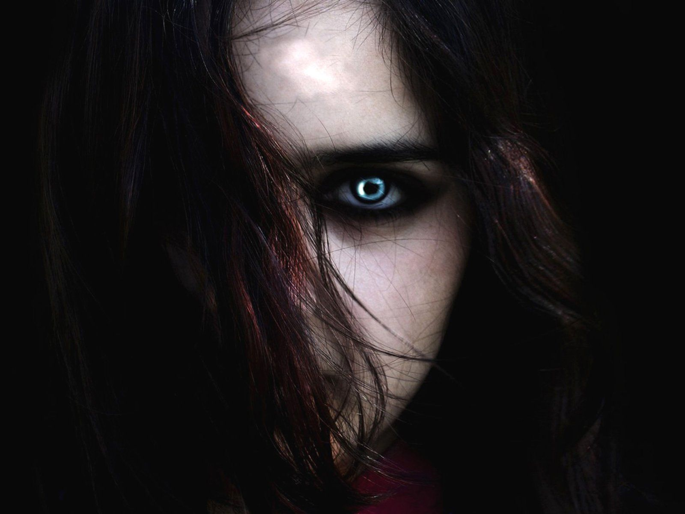

I started writing this three part series when I was around 15 years old...
This is a story that seemed not to come from me but rather through me
I struggled a lot of times to continue writing, sometimes coming back to it and writing a chapter or two before feeling stuck once more, and leaving it for years at a time
I have now come to understand that the characters just weren't ready to be written yet.
At numerous times over this time period I mourned for the characters who I knew had a story to tell
But that all changed after a series of personal and professional tragedies
The death of a close friend and the subsequent meeting of my now partner (at our friends funeral no less) seemed to be the strangely perfect backdrop to galvanise me into finishing book two and book three
With the support, direction and, not to forget, her amazing editing skills, bourne from her Masters Degree in Creative Writing
I was inspired once more. The characters seemed to come to life once again, and their story flowed.
So Inspired was I, and encouraged, that I finished writing the latter half of book 2 and the entirety of book 3 in a month.
And then all of a sudden I had it. The full story.
The search began down the usual avenues of publishing, with knockback after knockback, and their story started to feel like it would never be heard again.
Eventually I came to the conclusion that I would have to be the one to get it out there
SO here I am
Book 1 was been published and book 2 was published in 2022.
And, although I haven't sold a record number of books, or been able to retire from the profits, I have got their story out there. All across the UK and around the rest of the world.
And to me, that is the most important thing.
The book series follows the story of a young girl called Sophie. As her sixteenth birthday approaches, she suddenly finds herself embroiled in a world that she never knew existed. A world full of Vampyrs, Werewolves, Witches and other nightmarish creatures. Suddenly her whole life is thrown into chaos, everything she once knew is destroyed. Oh yeah, and her real Dad turns out to be a Vampyr. The nightmares she had been having since she was a child had intensified and grown more dangerous. When her newly discovered father promises that he will return, she waits. Unfortunately, even though he employs the help of some friends, the mission turns out to be more difficult than he anticipated. Sophie knows, when he doesn't turn up again, that she must find him, before its too late. She is plunged even deeper into a world with rules that she increasingly doesn't understand. Facing dangerous and wicked enemies, she fights to find her Father, and find her destiny.
Before its too late.
